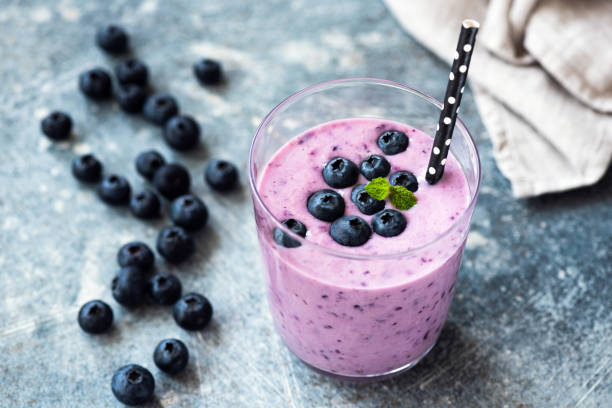

Berry Smoothie

Ever since i was a child, nothing could quite rouse my spirits like
a good ole berry smoothie. Here is how I like mine:
Ingredients
- 1 1/2 cups apple juice can also use almond milk, skim milk, coconut milk or other flavor of juice
- 1 banana sliced
- 1 1/2 cups frozen mixed berries
- 3/4 cup vanilla Greek yogurt
- 1 tablespoon honey optional
- Optional garnish: fresh berries and mint sprigs
Directions
- Place the apple juice, banana, berries and yogurt in a blender; blend until smooth. If the smoothie seems too thick, add a little more liquid (1/4 cup).
- Taste and add honey if desired. Pour into two glasses and garnish with fresh berries and mint sprigs if desired.
- Enjoy :)